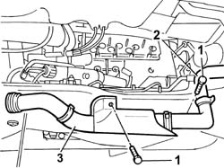
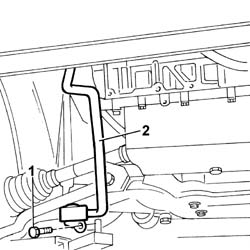

1088D24 RIGID PIPE FOR COOLANT INLET TO WATER PUMP - R + R
- Path
- Procedures > 10 ENGINE UNIT > 1088 ENGINE COOLING > 1088D COOLANT HOSES AND SLEEVES > 1088D24 RIGID PIPE FOR COOLANT INLET TO WATER PUMP - R + R
- Kind
- repair procedure (removal / refitting; the operation number is the code)
- Applies to
- engines: 2.0 JTD 8V, 2.3 JTD 16V; all production periods
- Interactive page
- https://sloeber94.github.io/elrnDB-fDct/en/#/244000963
Applies to: engines: 2.0 JTD 8V; all production periods
 Removing
Removing
 Refitting
RefittingOp. 7055B54 UNDER-ENGINE GUARD - R R
See in Op. 1048A21
See in Op. 1048A50
Op. 1048B16 PIPES AND/OR ELBOW BETWEEN TURBOCHARGER AND THROTTLE CASING - R.R.
Op. 1048B12 RIGID PIPE CARRYING AIR BETWEEN TURBOCHARGER AND INLET MANIFOLD - R+R
See in Op. 1076B50
See in Op. 1064A19
- Position a suitable container for collecting the coolant.
- Disconnect the lower radiator pipe and drain the engine coolant.
1. Undo the bolts fixing the rigid pipe to the cylinder head.
2. Disconnect the band for the supply pipe from the coolant reservoir.
3. Release the rigid pipe from the connector on the thermostat and remove it.

Applies to: engines: 2.0 JTD 8V; all production periods
Refitting
Removing- Replace thermostat side O-ring.
- Fit the rigid pipe which is a press fit in the housing on the thermostat.
- Connect the supply pipe from the coolant reservoir.
- Tighten the bolts fixing the rigid pipe to the cylinder head.
See in Op. 1064A19
See in Op. 1076B50
Op. 1048B12 RIGID PIPE CARRYING AIR BETWEEN TURBOCHARGER AND INLET MANIFOLD - R+R
Op. 1048B16 PIPES AND/OR ELBOW BETWEEN TURBOCHARGER AND THROTTLE CASING - R.R.
See in Op. 1048A50
See in Op. 1048A21
Op. 7055B54 UNDER-ENGINE GUARD - R R
Op. 0010T20 COOLANT CHECK DENSITY AND TOP UP IF NECESSARY
- Remove the vehicle from the lift.
Applies to: engines: 2.3 JTD 16V; all production periods
Removing
Refitting- Position the vehicle on the lift.
Op. 7055B54 UNDER-ENGINE GUARD - R R
- Lower the lift.
- Disconnect the engine coolant reservoir sleeve from the rigid coolant outlet pipe to the pump
- Raise the lift.
1. Undo the retaining bolt.
2. Disconnect the rigid coolant inlet pipe from the cylinder head and remove from the lower part of the engine bay.

Applies to: engines: 2.3 JTD 16V; all production periods
Refitting
Removing- Fit the rigid coolant inlet pipe to the pump and tighten the retaining bolt to the crankcase.
- Lower the lift.
- Connect the engine coolant reservoir sleeve to the rigid coolant outlet pipe to the pump
- Raise the lift.
Op. 0010T20 COOLANT CHECK DENSITY AND TOP UP IF NECESSARY
Op. 0010T21 COOLANT CHECK DENSITY AND TOP UP IF NECESSARY
Op. 7055B54 UNDER-ENGINE GUARD - R R
- Remove the vehicle from the lift.
Topics linked from this page (6)
- 0010T20 COOLANT CHECK DENSITY AND TOP UP IF NECESSARY
- 0010T21 COOLANT CHECK DENSITY AND TOP UP IF NECESSARY
- 1048B12 RIGID PIPE CARRYING AIR BETWEEN TURBOCHARGER AND INLET MANIFOLD - R+R
- 1048B16 PIPES AND/OR ELBOW BETWEEN TURBOCHARGER AND THROTTLE CASING - R.R.
- 1088D51 COOLANT SUPPLY PIPE FROM CRANKCASE TO OIL/WATER HEAT EXCHANGER - R.R. WITH REAR ENGINE SUPPORT REMOVED
- 7055B54 UNDER-ENGINE GUARD - R R